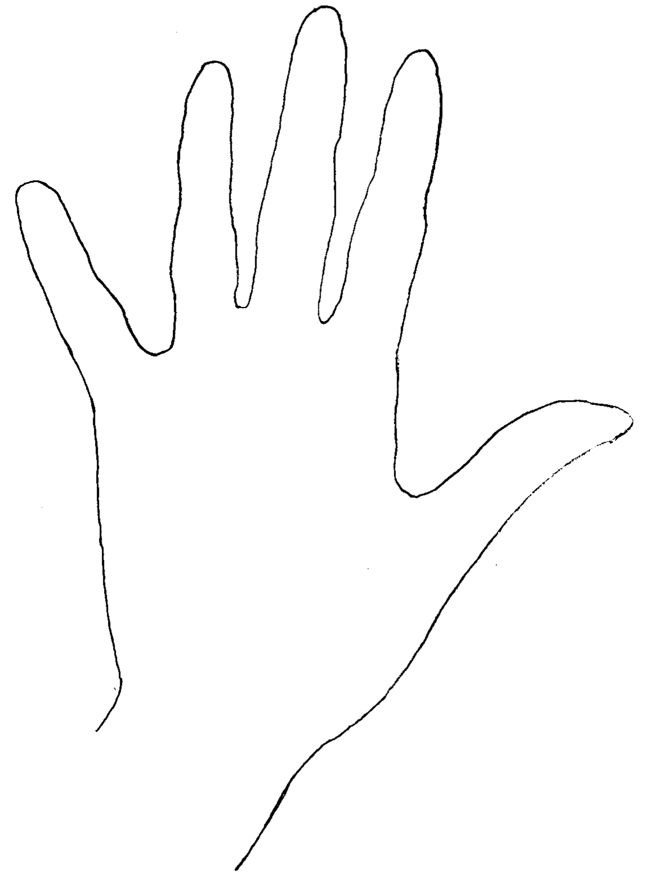
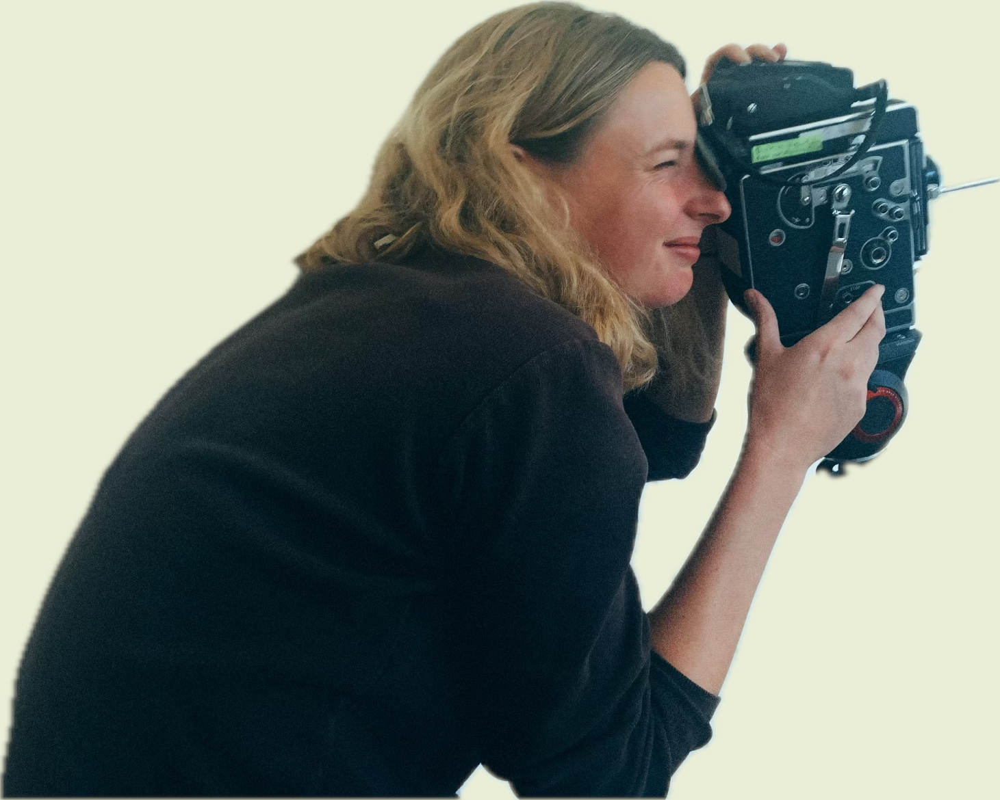
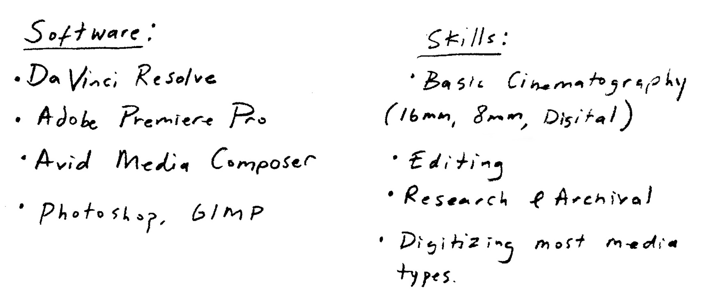

Hi Tala, 
I’m Cat Finsness, a filmmaker and artist with a love for experimental animation.
Most of my work lives in the world of the tangible. I like to incorporate celluloid film and printed materials to make tactile and textural creations. But lately, I’ve found myself looking for the bridge between that tactile world and the digital one. That’s why your work resonates with me so much. I am eager to learn your philosophies on movement and storytelling while providing the hands-on support you need to bring your next project to life.
I’m currently based in San Francisco, but I’m ready to move to Portland for a few months this winter (or NYC in the future, where I spent 8 years) to make this work. I’m a hard worker and eager to learn new skills. I believe and I hope I could be helpful to you. My skillset contains some of the following:

I've also included my portfolio below here for you to explore. I'd love to help you build whatever is next.
These animations were created using natural geological forms/rocks within the Bay area landscape.

These excerpts are from a film I made exploring the awe and mystery of total solar eclipses, told through personal accounts, archival footage, and stop-motion animation. Watch the film here.

These excerpts are from a film I am currently making about the 95-year-old artist Margaret Fabrizio. It will be a kaleidoscopic portrait weaving 16mm, digital, 4K, archival videos, and absurdist skits (or "Happenings") in an attempt to capture Margaret and her many incarnations.
This film was created by applying watercolor directly onto 16mm film. I scanned it with my own DIY film scanner that my husband and I created.
Thanks for your consideration.
Hope to hear from you soon!
Cat Finsness
c. 610 888 1153
email: finsness@gmail.com